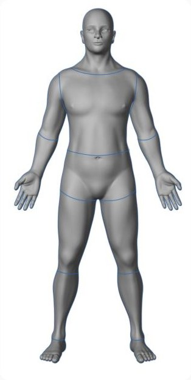
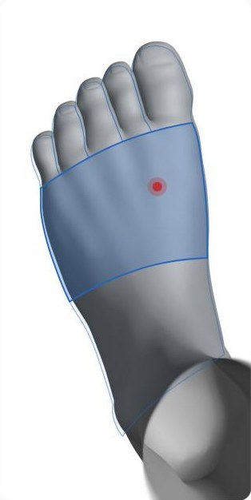
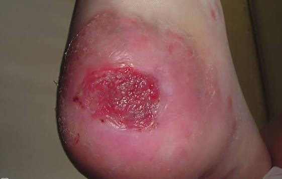

Interactive body map
Every wound gets an exact address
After the photo, WoundEye asks one question: where is it? Tap the body, open the close-up, and pin the exact spot. The site is saved with the photo, so the same wound can be found, compared and tracked on every visit — and a new wound on the same foot is never confused with an old one.
-

Tap the body
Choose a male or female figure and turn it — front, back, left or right side. Tap the region: head and neck, torso, hips and buttocks, arms, hands, thighs, lower legs or feet.
-

Open the close-up
The region zooms in with its own views — top or sole for a foot; front, outer side, back or inner side for a lower leg — and named anatomical areas to choose from.
-

Pin the exact spot
Tap where the wound is. A pin drops, the area is named — “Selected: Lt Heel” — and the location is stored with the record.
See it in the app
One photo, one pinned site
A heel wound photo, pinned on the sole close-up. Choose another site to see how the map handles different parts of the leg and foot.

- 2
- body figures, male and female
- 4
- whole-body views: front, back, left and right side
- 11
- named areas on the sole of each foot, from heel to each metatarsal head and toe
- 1 tap
- to pin the site — stored with every photo, visit after visit
Screens captured from the live WoundEye app. New 3D-rendered figures arrive with V3.
Keep exploring
More about WoundEye

How it works
From your mobile to a clinician’s answer
Capture, locate, clinical review and same-day guidance — plus the platform and integrations.
ExploreAssureStage
The clinicians behind every answer
Certified wound specialists determine type and stage, screen for infection and set the follow-up.
ExploreBuilt for